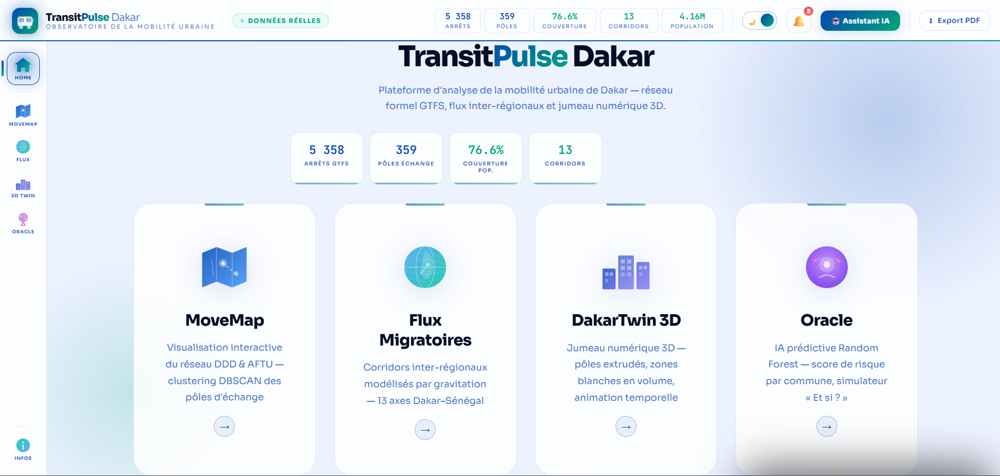

Mes réalisations

Chocolate & Coffee Safe
Site web dédié à l'univers du chocolat et du café. Design élégant, navigation fluide et présentation des produits.

Analyse & Prédiction COVID-19
Application interactive d'analyse des données COVID-19 avec visualisations dynamiques et modèles prédictifs. Développée avec Streamlit et Python.

Sama-Dekkuway Challenge
Participation à un hackathon SIG pour analyser et cartographier des données locales. Objectifs atteints grâce à Google Earth Engine et des outils SIG collaboratifs.

Adressage , Assiette Fiscale & Foncière
Numérisation des rues et bâtiments à Dakar pour le Ministère de la Communication et de l'Économie Numérique. Analyse spatiale et réalisation de cartes thématiques avec ArcGIS.

Dashboard Énergie
Dashboard interactif d'analyse de données énergétiques. Visualisation des indicateurs de consommation et de performance énergétique.

CityPulse Dakar
Dashboard interactif d'analyse du réseau de transport urbain de Dakar. Visualisation des données de mobilité et suivi des indicateurs de performance.